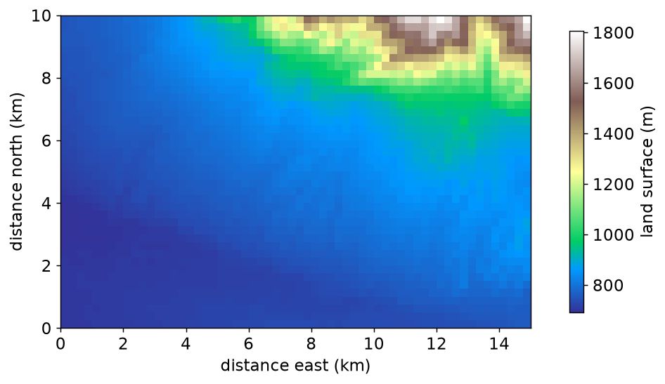
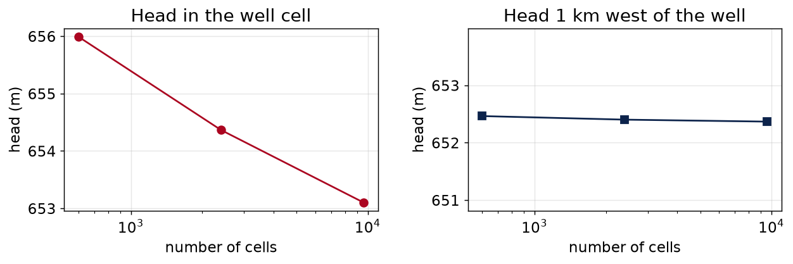
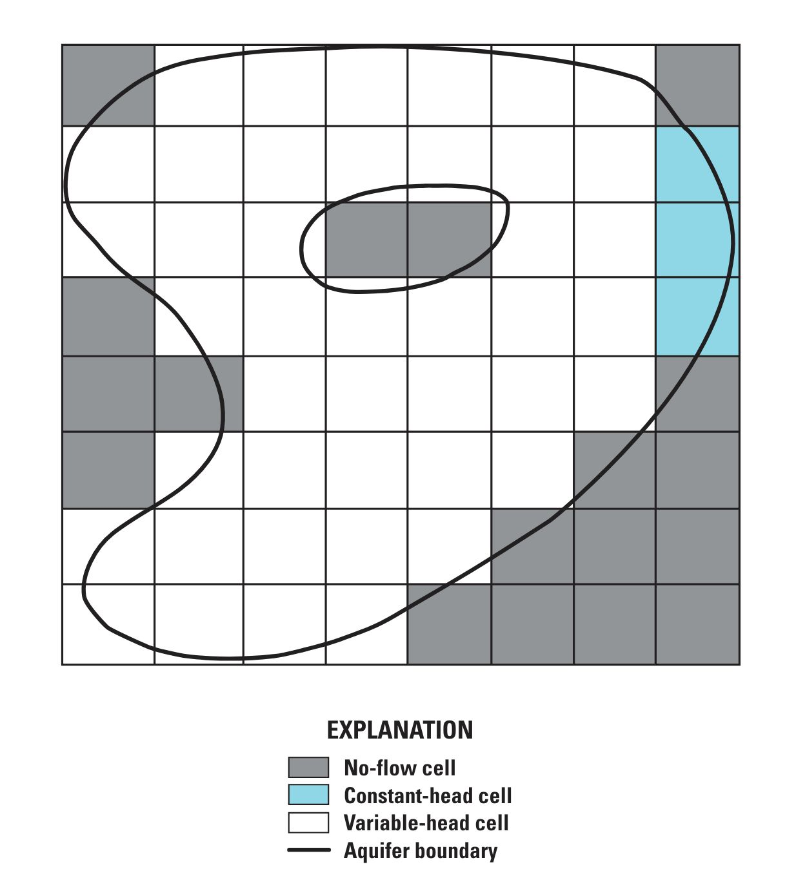
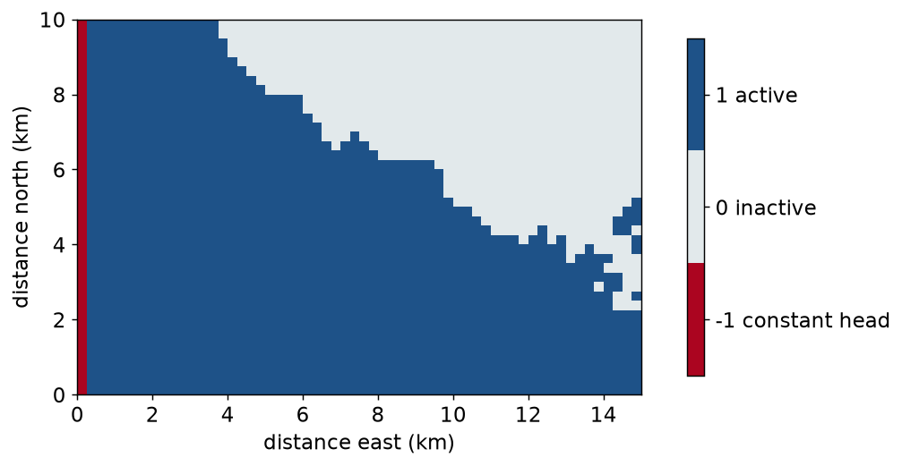
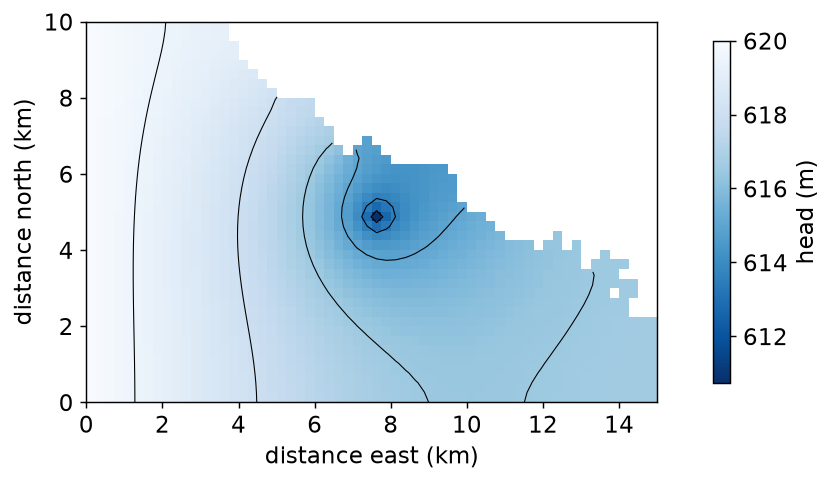

cell size cells well cell 1 km west of well
500 m 600 655.990 m 652.463 m
250 m 2,400 654.365 m 652.401 m
125 m 9,600 653.101 m 652.367 mHWRS 564a · Week 8 · Tuesday, October 13
Week 8, session 1 of 2
ibound: active, inactive, and constant-head cellsWe’re working through week08_01_discretization_boundaries.ipynb. Open it now and run cells as we go.

15 km by 10 km on the north side of the Tucson basin. Land surface is from SRTM, averaged onto 250 m cells: 40 rows, 60 columns.
| Layer | one, confined, top at 600 m, bottom at 400 m |
| Hydraulic conductivity | 12 m/d |
| West edge | constant head, 620 m |
| East edge | constant head, 700 m |
| Recharge | 1.2e-4 m/d everywhere |
| Well | 20,000 m³/d, 7.5 km east and 5 km south of the NW corner |
Same packages as Week 7, plus RCH for recharge. For the first half of today we ignore the mountains and treat the whole rectangle as aquifer.
A smaller cell gives a more detailed answer and a slower model. So how do you know when the cells are small enough?
Run the same problem at two or three cell sizes and compare. If the answer stops changing, the cells are small enough.
Keep the problem the same on the ground. The well stays 7.5 km east and 5 km south of the corner, so its row and column change with the cell size.
cell size cells well cell 1 km west of well
500 m 600 655.990 m 652.463 m
250 m 2,400 654.365 m 652.401 m
125 m 9,600 653.101 m 652.367 m
Both panels have the same vertical span.
Head near a well depends on the log of the distance from it:
\[h(r) = h_0 + \frac{Q}{2\pi T}\ln\frac{r}{r_0}\]
MODFLOW gives one head per cell. A smaller cell represents a region closer to the well, so its head is lower.
Each time the cell size is halved, the well-cell head drops by about \(\frac{Q}{2\pi T}\ln 2\). Here that is about 0.9 m. It does not go to zero.
Heads 1 km west of the well at three cell sizes. Work out the two changes and whether the second is smaller than the first.
Hint
Compare the sizes of the changes, not their signs. Use abs() on both.
Solution
The changes are −0.062 m and −0.034 m. Each is about half the one before, so the next would be under 2 cm. For most purposes 250 m is fine here.
If the second change were as big as the first, you would need smaller cells.
A rule of thumb: put at least 8 cells across the smallest feature you care about. You want to see a cone of depression about 2 km across in a 15 km by 10 km domain.
Hint
Divide the feature width by the number of cells you want across it. Then work out how many cells of that size fit in each direction.
ibound| Value | Meaning | Head |
|---|---|---|
1 |
active | calculated by MODFLOW |
0 |
inactive | not calculated; the cell is not in the model |
-1 |
constant head | fixed at the value in strt |
You set ibound in the BAS package. In Week 7 it was all ones, with -1 down the left and right edges.

0)-1)1)An active cell next to an inactive cell has a no-flow boundary on that side. You do not have to set that up. It follows from ibound.
ibound = 0 is not hk = 0hk = 0 is still in the equations and still gets a headTo leave rock out of the model, use ibound = 0.
We don’t have a map of where the basin fill ends. As a stand-in: any cell with land surface above 850 m is bedrock.
ibound = np.ones((1, NROW, NCOL), dtype=int)
ibound[0][land_surface > 850.0] = 0 # bedrock
ibound[:, :, 0] = -1 # constant head on the west edgeThe east edge is mostly mountain front now, so we leave it as no-flow and keep constant head on the west edge only.

1604 active, 756 inactive, 40 constant headsuccess = False
highest head in an active cell: 232,584 mThe run fails, and the highest head is hundreds of kilometres up.
Look at the east edge of the map again. A few small patches of active cells are surrounded by inactive ones. They get recharge and have nowhere to send it.
MODFLOW moves water only between cells that share a face. Cells that touch at a corner are not connected.
from scipy import ndimage
in_model = ibound[0] != 0 # active or constant head
regions, n_regions = ndimage.label(in_model)ndimage.label numbers each group of connected cells 1, 2, 3, … and uses the same shared-face rule.
4 separate regions, with [1633, 8, 2, 1] cellsHint
argmax() gives the position of the largest value, counting from 0. The cut-off cells are everything that is not in the largest region.

success = True, head 610.7 to 620.0 mibound.hnoflo, in the head file.What you did today
ibound to make part of the grid inactiveBefore Thursday
labs/week08/week08_01_discretization_boundaries.ipynbThursday
Unconfined flow, a model that does not converge with the default solver settings, and dry cells. Then a first look at the Pinal County model for Project 3.
HWRS 564a · Fall 2026